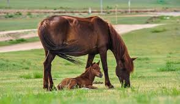
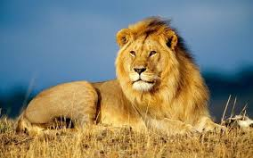

ウマ
クジラは哺乳類のクジラ目、あるいは鯨偶蹄目の鯨凹歯類に属する水生動物の総称であり。
シャッカル

ジャッカルは、哺乳綱食肉目イヌ科イヌ属 Canis の、キンイロジャッカルに似た中小型種3?4種の総称である。
ライオン
オスであれば体重は250キログラムを超えることもあり、ネコ科ではトラに次いで2番目に大きな種である
。クジラは哺乳類のクジラ目、あるいは鯨偶蹄目の鯨凹歯類に属する水生動物の総称であり。
ジャッカルは、哺乳綱食肉目イヌ科イヌ属 Canis の、キンイロジャッカルに似た中小型種3?4種の総称である。
オスであれば体重は250キログラムを超えることもあり、ネコ科ではトラに次いで2番目に大きな種である
。反芻動物としては比較的体は小さく、側頭部のらせん形の角と、羊毛と呼ばれる縮れた毛をもつ。原始的な品種では、短い尾など
、野生種の特徴を残すものもある。粗末な食べ物で成長して肉や乳を得られるだけでなく、ウシよりも沼地での行動に適応しているため水田での労働力としても有用であり、経済的に非常に優れた動物である。

草原、半砂漠、藪地などに生息する。地表棲だが、樹上に登ることもある。昼行性。単独で生活するが、母親とその幼獣・血縁関係のある個体（兄弟など）では小規模な群れを形成することがある